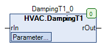

DampingT1 (FB)¶
FUNCTION_BLOCK DampingT1
Kurzbeschreibung¶
Zeitliche Filterung eines analogen EingangssignalsTypische Anwendung: Filterung eines Sensor-Rohwerts
Darstellung¶

Schnittstellen¶
Eingänge¶
Name Datentyp Wertebereich Initialwert Funktion rIn REAL Analogwerteingang
Ausgänge¶
Name Datentyp Wertebereich Initialwert Funktion rOut REAL Gefilteter Analogwertausgang
Sollwerte / Parameter¶
Name Datentyp Wertebereich Initialwert Funktion tTimeConstant TIME 5s... T#10s Filter - Zeitkonstante rInitValue REAL 100 Initialwert eInitial eInit eInit.InputValue Auswahl des Initialwerts tInitDelay TIME T#5s Startverzögerung - Initialisierung
Funktionsbeschreibung¶
Allgemeines¶
Das analoge Eingangssignal rIn wird im Intervall der Abtastzeit ( hier: 1s, fest eingestellt ) auf seine Wertänderungen hin untersucht.
Weicht der aktuelle Wert am Eingang rIn zum Zeitpunkt t vom Wert am Ausgang rOut zum Zeitpunkt t-Abtastzeit ab, so wird der aktuelle Ausgangswert rOut zum Zeitpunkt t gemäß folgenden Algorithmus berechnet:
rOut = rOut (t-Abtastzeit) + ( ( rIn - rOut (t-Abtastzeit) ) * ( Abtastzeit / tTimeConstant ) )
Legende: (1) rOut = gefilteter Analogwertausgang zum Zeitpunkt t
(2) rOut (t-Abtastzeit) = gefilteter Analogwertausgang zum Zeitpunkt t-Abtastzeit
(3) rIn = Analogwerteingang zum Zeitpunkt t
(4) Abtastzeit = 1s
(5) tTimeConstant = Filter - Zeitkonstante
(6) t = aktueller Zeitpunkt
Regeln zur Einstellung der Filter - Zeitkonstante tTimeConstant
tTimeConstant > ( Abtastzeit * 5 )
tTimeConstant = 0: rOut = *rIn
Art der Initialisierung eInitial¶
Mit diesem Sollwert / Parameter wird die Art der Initialisierung des Analogwerteingangs rIn festgelegt.
Die Initialisierung wird einmalig nach jedem CPU-Neustart ausgeführt.
Folgende Optionen sind möglich:
Art Wert der Initialierung Hinweis eInit.InitValue rInitValue Einstellbarer Initialwert eInit.InputValue rIn Eingangswert eInit.InputValueDelayed rIn Verzögerter Eingangswert
Die Initialisierung wird unabhängig davon permanent ausgeführt, wenn der Sollwert / Parameter tTimeConstant den Wert T#0s hat.
Visualisierung¶
Codesys¶
- InOut:
Scope Name Type Initial Comment Input rIn REAL Analogwerteingang tTimeConstant TIME TIME#10s0ms Filter - Zeitkonstante rInitValue REAL 100 Initialwert eInitial eInit eInit.InputValue Auswahl des Initialwerts tInitDelay TIME TIME#5s0ms Startverzögerung - Initialisierung Output rOut REAL Gefilteter Analogwertausgang